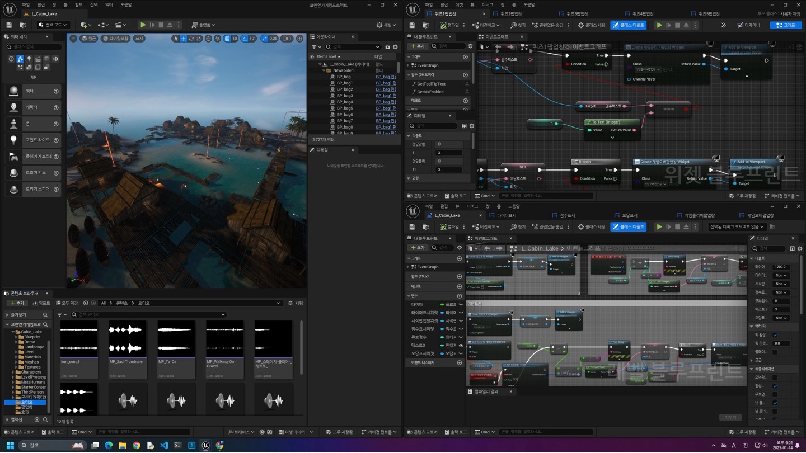

< 프로그램 후기 >
25년 1월 6일부터 1월 17일까지 진행된 언리얼기반 콘텐츠 제작 과정은
힘든 순간도 분명 있었지만, 그만큼 많은 것을 배울 수 있었던 유익한 시간이었다.
이렇게 제대로 혼자 무언가를 만들어내본 적이 없었는데 완성된 결과물을 보니 뿌듯하기도 하고,
더 잘 만들 수 있을 거 같은데 하는 아쉬운 마음도 컸다.
내가 게임을 좋아해서 언리얼 수업에 대해 흥미가 있었을진 몰라도,
너무 수업같지 않고 재밌는 수업 환경을 만들어주신 이재우 강사님께 가장 감사드린다.
내년에도 같은 프로그램이 진행된다면 주변 지인들에게 꼭 추천해주고 싶다.